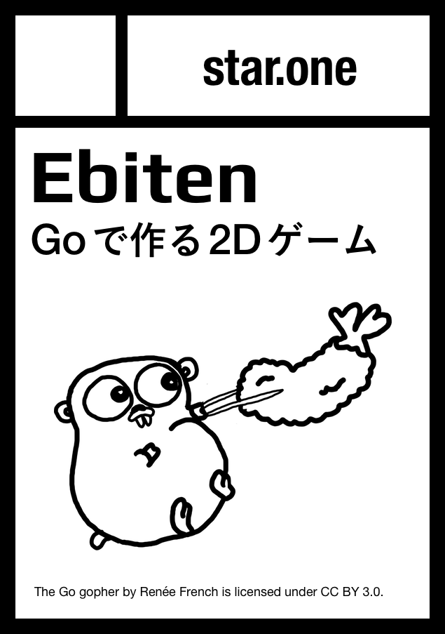

A simple 2D game library in Go
A mobile game written in Go (Ebiten). I developed the runtime part.
Go port of Inovation 2007, originally developed by Omega
Maze Game
e.g. Adding a mini map like Final Fantasy VI
A 2D Game Library in Ruby
To be published at 技術書典 2 on April 9.
